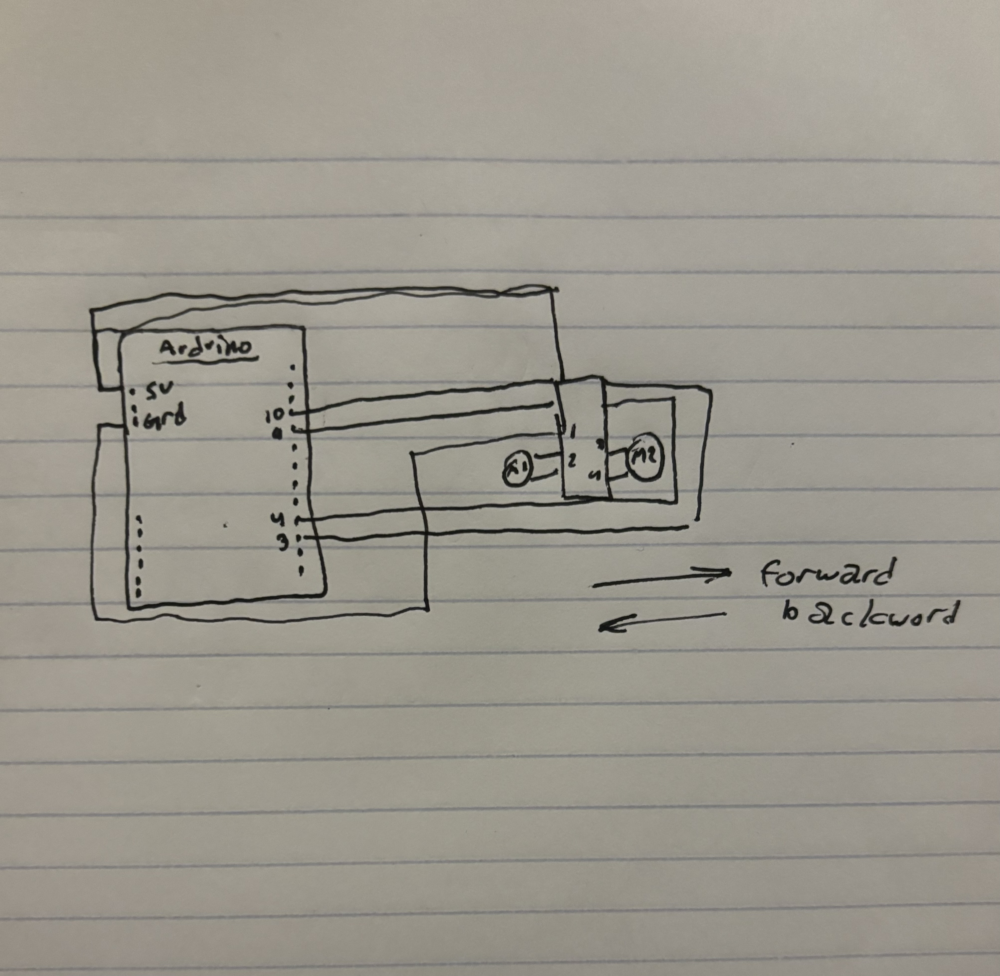

Circuit Schematic:
This is the schematic for the lantern I created for a5. It was created with https://www.circuit-diagram.org/editor/ The blank resistor represents the LED strip, and the circle next to it with the + and - is the external 12 V power source we needed to use to power it.
Circuit:
Here is the circuit that creates the lantern. I wrapped the LED strip around a clear cup to create a bulb affect. Typical camping lanterns have several pre-built modes that each have different behaviors. I figured I could program my lantern to display a few of these, and the IR remote seemed like the logical solution to cycle through these modes.
Circuit Operation:


My lantern has 5 behaviors, and I have demonstrated the two that "change" here. Buttons 1 - 3 on the remote change the lantern to solid state lights of different brightnesses (1 lowest to 3 highest). I didn't include these modes here as the different brightnesses didn't show up well in photos. The gif on the left is "mode 4," and it is a simple fade from low light to high, then back again. On the right, I demonstrate "mode 5," or "SOS Mode." This lantern behavior blinks "SOS" in morse code. Additionally, the power button on the controller works to turn the lantern on and off.
Code Snippet:
#include //retreives IR remote library
const int RECV_PIN = 12; //Assigns IR sensor to pin 12
const int light = 9; //Assigns LED strip to pin 9
IRrecv irrecv(RECV_PIN); //Creates IRrev, used to get info from IR remote
decode_results results; //Creates "results"; decodes info recieved from remote
int mode = 1; //Creates int "mode" (used to track behavior)
int brightness = 0; //Creates int "brightness" (used in fade behavior)
bool power = false; //Creates boolean "power" (tracks if light should be on)
void setup(){
irrecv.enableIRIn(); //Enables IR sensor to recieve
pinMode(light, OUTPUT); //Identifies light pin as output
}
void loop(){
if (irrecv.decode(&results)){ //Checks if there is data from IR remote
switch(results.value){ //Start of switch statement for different remote inputs
case 0xFFA25D: //Remote button "pwr"
power = !power; //Changes bool power
if (!power) digitalWrite(light, LOW); //Turns light off if power is false
break; //Exit switch statement
case 0xFF30CF: //Remote button 1
mode = 1; //Change mode
break; //Exit switch statement
case 0xFF18E7: //Remote button 2
mode = 2; //Change mode
break; //Exit switch statement
case 0xFF7A85: //Remote button 3
mode = 3; //Change mode
break; //Exit switch statement
case 0xFF10EF: //Remote button 4
mode = 4; //Change mode
break; //Exit switch statement
case 0xFF38C7: //Remote button 5
mode = 6; //Change mode
break; //Exit switch statement
}
irrecv.resume(); //Re-enable IR reception
}
if (power == true) { //Checks if power is true
switch(mode) { //Start switch statement for different behaviors
case 1: //Mode 1
analogWrite(light, 40); //Uses analogWrite to create "dim" light
break; //Exit switch statement
case 2: //Mode 2
analogWrite(light, 100); //Uses analogWrite to create "medium" light
break; //Exit switch statement
case 3: //Mode 3
digitalWrite(light, HIGH); //Turns LED on
break; //Exit switch statement
case 4: //Mode 4
if (brightness <= 255) { //Checks if int brightness below 255
analogWrite(light, brightness); //Lights LED according to brightness
delay(4); //4 milisecond delay
brightness++; //increases brightness by 1
} else {
mode = 5; //Change mode
}
break; //Exit switch statement
case 5: //Mode 5
if (brightness > 0) { //Checks if int brightness is bigger than 0
brightness--; //decreases brightness by 1
analogWrite(light, brightness); //Lights LED according to brightness
delay(4); //4 milisecond delay
} else {
mode = 4; //Change mode
}
break; //Exit switch statement
case 6: //Mode 6
digitalWrite(light, HIGH); //Turns on LED
delay(200); //200 milisecond delay
digitalWrite(light, LOW); //Turns off LED
delay(200); //200 milisecond delay
digitalWrite(light, HIGH); //Turns on LED
delay(200); //200 milisecond delay
digitalWrite(light, LOW); //Turns off LED
delay(200); //200 milisecond delay
digitalWrite(light, HIGH); //Turns on LED
delay(200); //200 milisecond delay
digitalWrite(light, LOW); //Turns off LED
delay(600); //600 milisecond delay
digitalWrite(light, HIGH); //Turns on LED
delay(600); //600 milisecond delay
digitalWrite(light, LOW); //Turns off LED
delay(200); //200 milisecond delay
digitalWrite(light, HIGH); //Turns on LED
delay(600); //600 milisecond delay
digitalWrite(light, LOW); //Turns off LED
delay(200); //200 milisecond delay
digitalWrite(light, HIGH); //Turns on LED
delay(600); //600 milisecond delay
digitalWrite(light, LOW); //Turns off LED
delay(600); //600 milisecond delay
digitalWrite(light, HIGH); //Turns on LED
delay(200); //200 milisecond delay
digitalWrite(light, LOW); //Turns off LED
delay(200); //200 milisecond delay
digitalWrite(light, HIGH); //Turns on LED
delay(200); //200 milisecond delay
digitalWrite(light, LOW); //Turns off LED
delay(200); //200 milisecond delay
digitalWrite(light, HIGH); //Turns on LED
delay(200); //200 milisecond delay
digitalWrite(light, LOW); //Turns off LED
delay(600); //600 milisecond delay
break; //Exit switch statement
}
}
}
Questions:
This is the datasheet for the n-mosfet transistor: https://www.diodes.com/assets/Datasheets/DMT6009LCT.pdLinks to an external site.f What is the absolute maximum amount of current between pins 2 and 3?
According to the datasheet for the DMT6009LCT N-Type MOSFET Transistor, the maximum current between pins 2 and 3 (drain and source) is 80 A.
Draw a schematic for a circuit with using at least your arduino, a DC motor, a flyback diode, and capacitors between power and ground. Find parts with datasheets you could use for each of these schematic components.

The datasheets used are as follows:
MOSFET Transistor
DC Motor
Flyback Diode
Arduino UNO R3
Here is the datasheet for the L293D chip: https://www.ti.com/product/L293DLinks to an external site.. Draw a schematic using at least your arduino, this chip, and two motors. Write (pseudo) code that shows how you would move the motors both forward, both back, then one forward one back, and one back then forward.

Both "forward":
Power to 1A (pin10) and 3A (pin4): LOW
Power to 2A (pin9) and 4A (pin3) : HIGH
Both "backward":
Power to 1A (pin10) and 3A (pin4): HIGH
Power to 2A (pin9) and 4A (pin3) : LOW
Opposite directions:
Power to 1A (pin10) and 4A (pin3): HIGH
Power to 2A (pin9) and 3A (pin4) : LOW